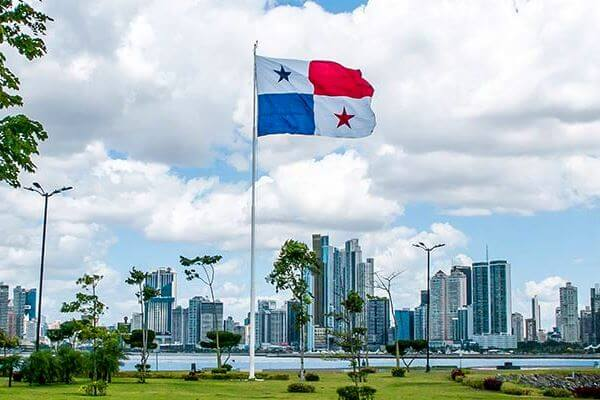

Bandera Actual (1903):Bandera de Panamá. Nació en la clandestinidad de la noche del 2 de
noviembre de 1903, surgió de la imaginación de don Manuel Encarnación Amador, hijo del primer presidente de la
República, Manuel Amador Guerrero. Las manos de su madrastra, María De La Ossa de Amador y de la cuñada de ésta,
Angélica Bergamota de De La Ossa, confeccionaron el lienzo que representaría en adelante a Panamá ante el mundo.
Fue paseada por las principales calles ese martes 3 de noviembre, por don Alejandro de la Guardia, y bendecida
el 20 de diciembre siguiente, en la Plaza de la Independencia.

Escudo nacional de Panamá:El escudo panameño consiste de dos cuarteles superiores iguales; el
de la izquierda, en campo plateado, presenta un sable y un fusil para simbolizar el estado de alerta del pueblo
panameño en defensa de sus derechos y soberanía; el cuartel derecho presenta una pala y un azadón que son los símbolos del trabajo.
En el rectángulo central a todo lo ancho del escudo esta el Istmo con los dos océanos y en el cielo un sol que se oculta
y una luna que sale; la hora crepuscular que marca el instante de la independencia.

Ave Nacional:La arpía mayor, águila arpía, águila harpía o simplemente harpía (Harpia harpyja) es una especie
de ave accipitriforme de la familia Accipitridae que vive en la zona neotropical. Es el águila más grande del Hemisferio Occidental
y del Hemisferio Austral, y la única especie del género Harpia. Su hábitat es el bosque lluvioso. No se reconocen subespecies.3
El águila harpía es el ave nacional de Panamá y la especie símbolo de la diversidad biológica de Ecuador. También, es el ave de la
Fuerza Aérea Colombiana y en ella está inspirado el helicóptero Arpía IV.
Flor Nacional:Flor del Espíritu Santo ,cuyo nombre científico es Peristeria elata. Se caracteriza por tener
pétalos de un color marfil intenso, adornados en el centro de su libelo con una bien definida y delicada paloma que florece en
los meses de julio a octubre.La Flor del Espíritu Santo fue declarada el 21 de octubre de 1980 distintivo nacional de Panamá.
Árbol Nacional:El árbol nacional de Panamá, Sterculia apetala, conocido simplemente como el árbol Panamá, es un árbol
alto y recto impresionante por su tronco liso y vertical. Existen varias explicaciones del origen del nombre «Panamá,» pero la mayoría
coincide que el nombre tiene sus raíces en una o varias de las lenguas indígenas que se hablaban en la región durante el siglo 16.
El árbol de Panamá fue reconocido oficialmente como el árbol nacional de la República de Panamá en 1969.
Historia de Panamá:Panamá conforma la cintura de América y ha tenido un papel estratégico en la historia del hemisferio occidental.
En otros tiempos fue una ruta comercial terrestre entre el antiguo Perú y México, y el Panamá de la conquista poscolombina se convirtió en la vía para
transportar los tesoros incas. Ubicado entre dos océanos, el tráfico es una cuestión crucial para el país desde hace mucho tiempo.
Al igual que el Ferrocarril de Panamá llevó a los buscadores de oro a California en la época de la fiebre, el canal se ha convertido
en el motor del comercio mundial.

Extensión territorial:
El Instituto Geográfico Nacional “Tommy Guardia”, calcula la superficie total de la República de Panamá en
75,517 km2 aproximadamente. En cuanto al mar territorial, el mismo se extiende a una zona de doce (12) millas
marinas de longitud, con una superficie de 319,823.9 km2,
superando el territorio insular.
La posición geográfica del Istmo, se sitúa en bajas latitudes, en una región de clima tropical. Hay marcadas,
dos temporadas de regímenes pluviométricos: la lluviosa y la seca. La primera, es más extensa, abarcando
desde fines de abril hasta noviembre.
Provincias:
- Bocas del Toro
- Coclé
- Colón
- Chiriquí
- Darién
- Herrera
- Los Santos
- Panamá
- Veraguas
- Panamá Oeste
- Emberá-Wounaan
- Guna Yala
- Naso Tjër Di
- Ngäbe-Buglé
Lugares Turusticos más importantes:
Canal de Panamá (Provincia de Panamá):
Actualmente el canal de Panamá, además de funcionar como medio principal para el transporte de naves
marinas, ha empezado a tener un gran espacio en el turismo dada la curiosidad de los extranjeros por este
complicado sistemas de esclusas que llevan desde el Atlántico al Pacifico a miles de buques durante todo
el año.Para tener una experiencia inolvidable al visitar el canal se recomienda que vayan a los centros
de visitantes localizados en distintos tramos del mismo
Bocas del Toro (Provincia de Bocas del Toro):
San Juan del Sur está ubicado en Rivas, a dos horas de Managua. Conocido principalmente por sus costas, entre ellas Maderas
y Marsella, es de los mejores destinos de playa en Nicaragua, a pesar de sus elevados costos.
Otro sitios de interés son la estatua de Cristo y la Reserva Natural La Flor, una playa a 40 minutos del centro. Aquí
podrás ver nidos de tortugas oliváceas
San Blas (Guna Yala):
Si en tu viaje en Panamá buscas un escape de la realidad, entonces San Blas, el complejo archipiélago conformado por 365 islas
(sí, como los días del año) es tu opción ideal.
Alrededor de 50 están habitadas por sus pobladores y por los guardianes de estas tierras, ya que ellos no han permitido que su enorme reserva natural sea modificada con
complejas edificaciones hoteleras
Colón (Provincia de Colón):
Entre los mejores lugares para visitar en Panamá está un espacio caribeño muy cercano al canal de Panamá.
Así es como se puede describir la zona portuaria que lleva el apellido del conquistador de América, y es
que en ella se produce el mayor intercambio de relaciones comerciales, pues cuenta con la zona libre más grande
de Latinoamérica.

Casco Antiguo (Ciudad de Panamá):
Tras el saqueo del pirata Morgan a lo que fuera Panamá viejo, la ciudad colonial de Panamá es trasladada a una hermosa
península rodeada de arrecifes que servían de distracción para las embarcaciones piratas.
Sin embargo, allí tampoco corrió con buena suerte, pues dos incendios devastadores arrasaron con gran
parte de ella.